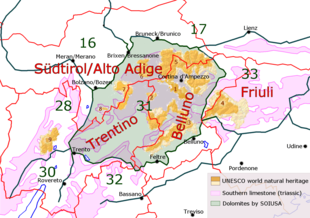

Normalmente con il termine Dolomiti è solito riferirsi all'insieme di gruppi montuosi, caratterizzati da una prevalente presenza di roccia dolomitica, convenzionalmente delimitati a nord dalla Rienza e dalla Val Pusteria, a ovest dall'Isarco e dall'Adige con la valle omonima, a sud dal fiume Brenta da cui si stacca la Catena del Lagorai al confine con la Val di Fiemme e a est dal Piave e dal Cadore.
In basso due tra i gruppi montuosi più caratteristici: le tre cime di Lavaredo e il massiccio della Marmolada